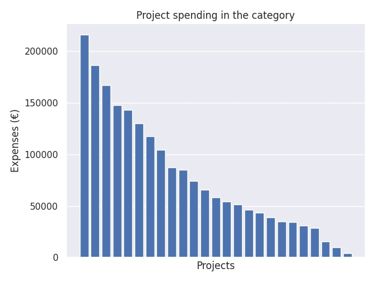

Innovatiivisten oppimisympäristöjen edistäminen esi- ja perusopetuksessa sekä lukiokoulutuksessa 2017
Category summary
79K spent on average
216K highest spending

Reports in the category
Turun yliopisto, Kasvatustieteiden tiedekunta, Turun normaalikoulu
Project name: Hacking the 6th wave - lukion yliopisto- ja yritysyhteistyö
216K spent
Helsingin kaupunki opetusvirasto
Project name: Värkkäämällä maailma haltuun- iloa ja innovointia oppimiseen
186K spent
Turun kaupunki, sivistystoimiala, lukiokoulutus
Project name: 24/7 Monitoimiareena
167K spent
Vantaan kaupunki
Project name: Luovaa teknologiaa lukioihin
147K spent
Turun kaupunki, sivistystoimiala/lukiokoulutus
Project name: Tutoriaalinen oppimisympäristö lyhyen matematiikan opiskeluun
143K spent
Otavan Opisto / Mikkelin kaupunki
Project name: Pulssi – sykettä lukion arviointikulttuuriin
130K spent
Lempäälän kunta
Project name: #IDEA2020
118K spent
Sipoon kunta, sivistyspalvelut
Project name: Unelmien oppimaisemaa rakentamassa
104K spent
Vanda stad, Svenskspråkiga resultatområdet
Project name: Helsinge MakerSpace
87.4K spent
Kuopion kaupunki
Project name: Globaali VR on osa lukiolaisen arkea
84.9K spent
Kvarnen Samkommun
Project name: Science Expo
74.1K spent
Sotkamon kunta, Sotkamon lukio
Project name: Verkostosta voimaa - muutoksesta mahdollisuus
65.7K spent
Otavan Opisto / Mikkelin kaupunki
Project name: Santra - juttelubotti etäopiskelijan ja etäohjaajan tukena verkko-oppimisympäristössä
58.3K spent
Raseborg stad
Project name: Teknikpoolen
54.2K spent
Kokkolan kaupunki
Project name: Kielitaitoa työelämään ja kansainvälisyyteen
51.6K spent
Tuusulan kunta
Project name: Laajennetut oppimisympäristöt lukiokoulutuksessa
46.6K spent
Lahden kaupunki
Project name: LYhtY - Lukion yhteisöllisyyttä joustavin yksilöllisin oppimispoluin
43.3K spent
Outokummun kaupunki
Project name: LearnLAB - uusi oppimisympäristö, uusi pedagogiikka
39K spent
Seinäjoen kaupunki
Project name: Aikatauluihin joustoa
35K spent
Kuopion kaupunki, kasvun ja oppimisen palvelualue
Project name: Äänimaailma ja monimediaisuus - oivalluksia oppimiseen alakoululaisille
34.5K spent
Staden Jakobstad
Project name: Minnovation lab
30.8K spent
Korsholms kommun/Korsholms gymnasium
Project name: Karriär2025
28.6K spent
Touko Voutilaisen koulusäätiö / Eiran aikuislukio
Project name: Reaaliaineiden paja
15.9K spent
Helsingin Uusi yhteiskoulu oy
Project name: Desing-ajattelusta ongelmanratkaisuun
9.93K spent
Kinnulan kunta
Project name: Innovatiivisten oppimisympäristöjen edistäminen esi-ja perusopetuksessa sekä lukiokoulutuksessa 2017
4.42K spent